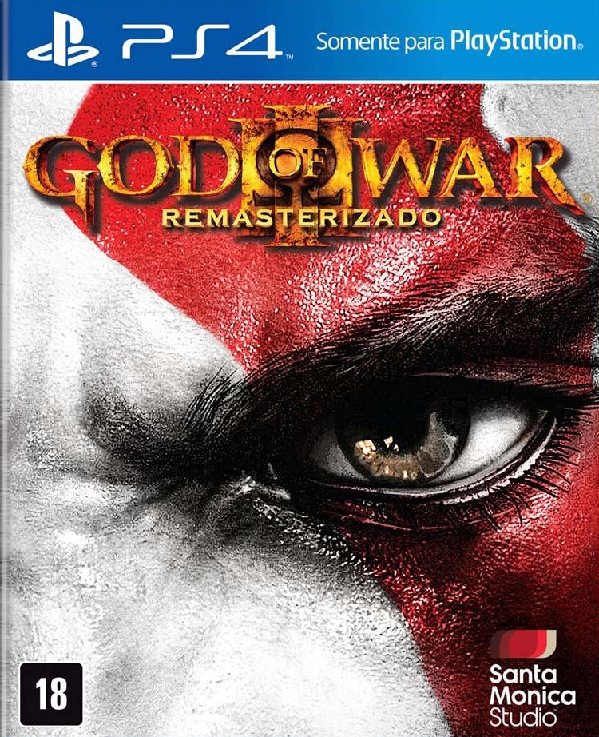
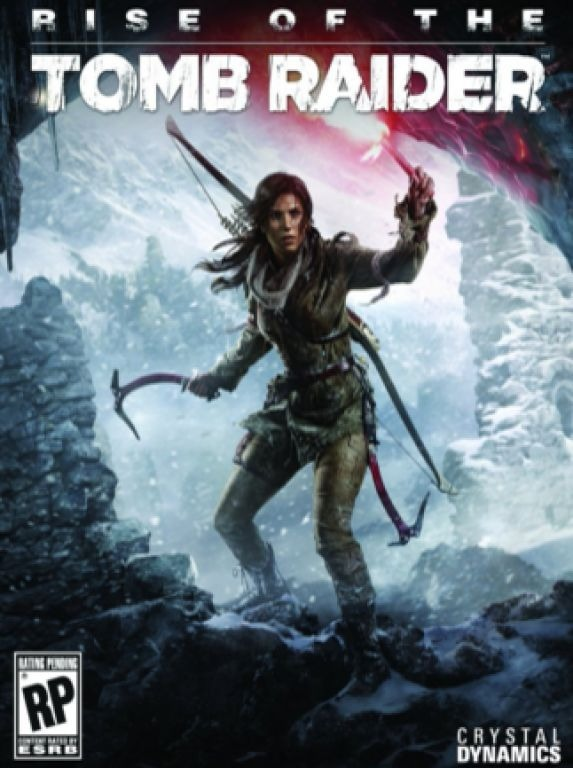
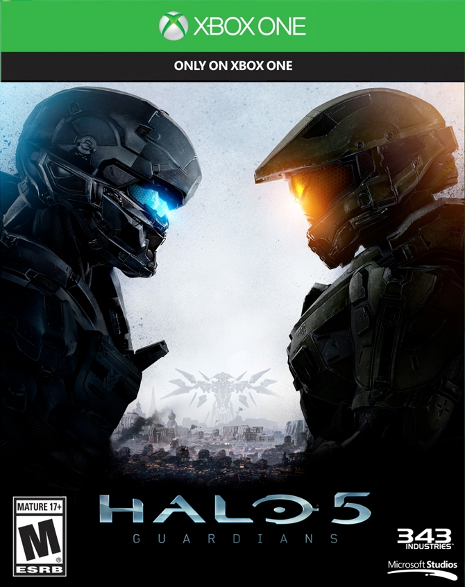

God of War - III

God of War III is an action-adventure hack and slash video game developed by Santa Monica Studio
and published by Sony Computer Entertainment (SCE). Released for the PlayStation 3 (PS3) console on
March 16, 2010, the game is the fifth installment in the God of War series, the seventh chronologically,
and the sequel to 2007's God of War II. Loosely based on Greek mythology, the game is set in ancient
Greece with vengeance as its central motiv. The player controls the protagonist and former God of War Kratos,
after his betrayal at the hands of his father Zeus, King of the Olympian gods. Reigniting the Great War,
Kratos ascends Mount Olympus until he is abandoned by the Titan Gaia. Guided by Athena’s spirit,
Kratos battles monsters, gods, and Titans in a search for Pandora, without whom he cannot open Pandora's Box,
defeat Zeus, and end the reign of the Olympian gods.
Buy it on Mercado Livre
Rise of The Tomb Raider

Rise of the Tomb Raider is an action-adventure video game developed by Crystal Dynamics. It is the sequel to
the 2013 video game, Tomb Raider, and the eleventh entry in the Tomb Raider series. The game was released
by Microsoft Studios for Xbox One and Xbox 360 in 2015. Square Enix released the game for Microsoft Windows
and PlayStation 4 in 2016.
Buy it on Mercado Livre
Halo 4

Halo 4 is a first-person shooter video game developed by 343 Industries and published by Microsoft Studios
for the Xbox 360 video game console. The seventh video game installment in the Halo franchise,
the game was released in November 2012. Halo 4's story follows a cybernetically enhanced human supersoldier,
Master Chief, and his artificial intelligence construct Cortana, as they encounter unknown threats while
exploring an ancient civilization's planet. The player assumes the role of Master Chief,
who battles remnants of the former military alliance of alien races known as the Covenant and mechanical
warriors of the Forerunner empire known as the Prometheans. The game features a selection of weapons, enemies,
and game modes not present in previous titles of the series.
Buy it on Mercado Livre